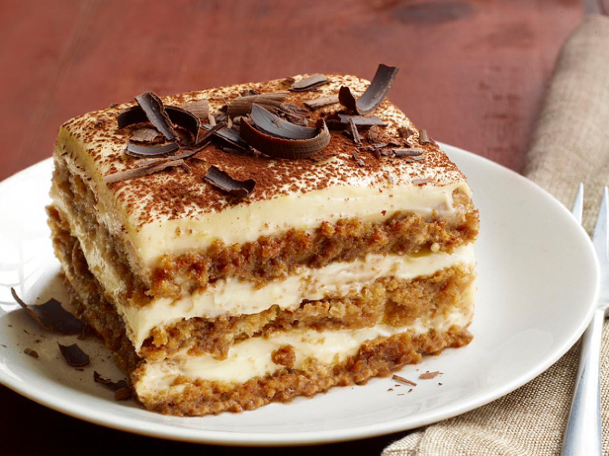

Tiramisu Recipe
- 1 cup mascarpone cheese
- 1 cup heavy cream
- 1/2 cup granulated sugar
- 1 tsp vanilla extract
- 1 cup brewed espresso, cooled
- 24-30 ladyfinger cookies
- Cocoa powder for dusting
- In a mixing bowl, whisk together mascarpone cheese, heavy cream, sugar, and vanilla extract until smooth.
- Dip ladyfinger cookies into brewed espresso and layer them at the bottom of a serving dish.
- Spread a layer of the mascarpone mixture over the ladyfingers.
- Repeat layers of dipped ladyfingers and mascarpone mixture, finishing with a layer of mascarpone on top.
- Refrigerate for at least 4 hours or overnight.
- Before serving, dust with cocoa powder.
New York Cheesecake Recipe
- 1 1/2 cups graham cracker crumbs
- 1/4 cup granulated sugar
- 1/2 cup unsalted butter, melted
- 4 packages (8 oz each) cream cheese, softened
- 1 cup granulated sugar
- 1 tsp vanilla extract
- 4 large eggs
- 1 cup sour cream
- Preheat oven to 325°F (160°C). Grease a 9-inch springform pan.
- In a medium bowl, combine graham cracker crumbs, sugar, and melted butter. Press mixture onto the bottom of the prepared pan.
- In a large mixing bowl, beat cream cheese, sugar, and vanilla extract until smooth.
- Add eggs, one at a time, beating well after each addition. Stir in sour cream.
- Pour batter over crust in the pan. Smooth the top with a spatula.
- Bake for 55-60 minutes, or until center is almost set.
- Remove from oven and let cool on a wire rack for 10 minutes. Run a knife around the edges to loosen.
- Refrigerate for at least 4 hours or overnight.
- Serve chilled. Optionally, top with fruit compote or whipped cream.